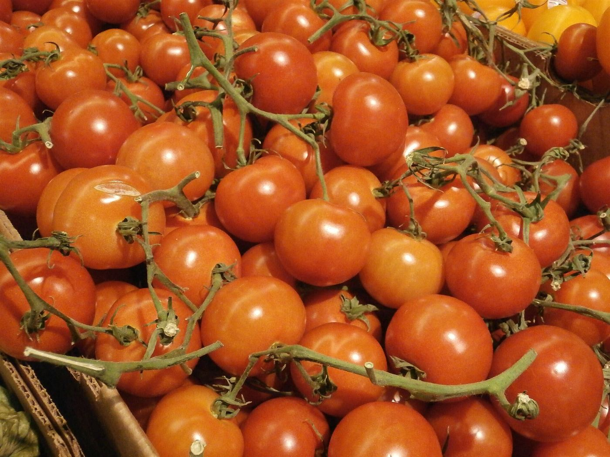
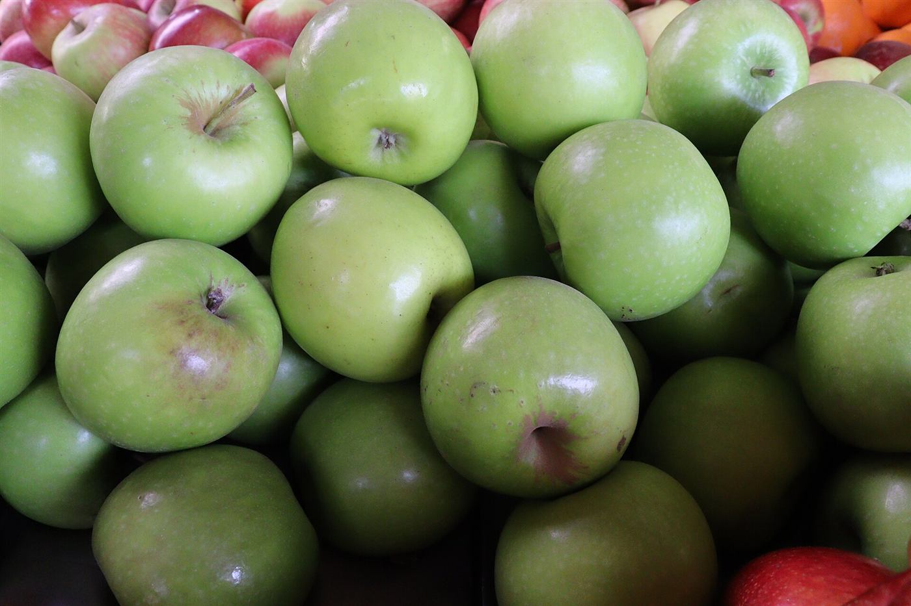
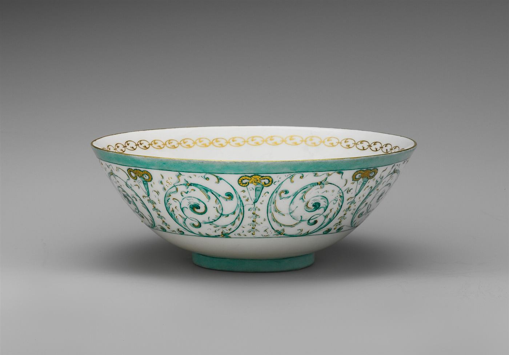
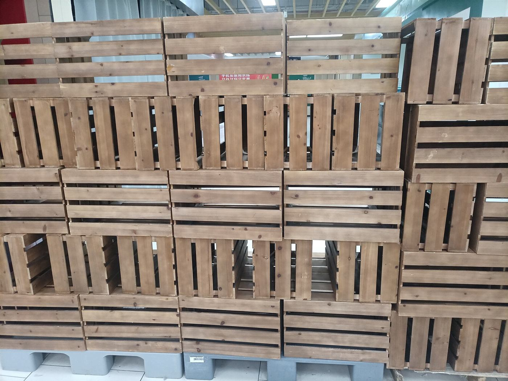
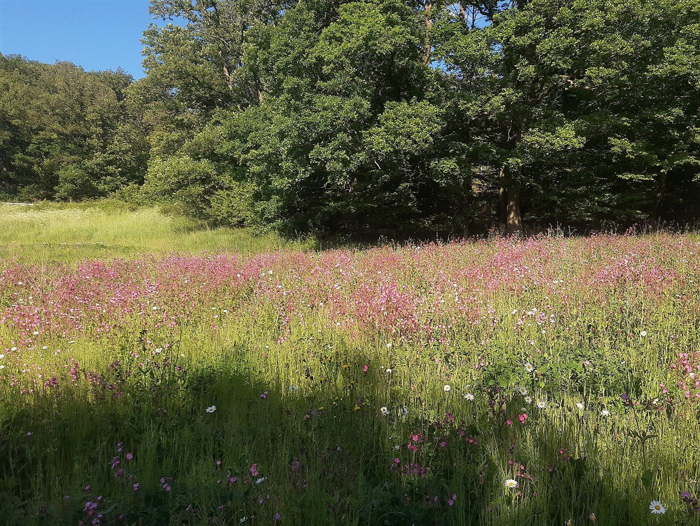

Shelf Guide
商品紹介 ― 棚のご案内
取扱商品は準備中です。最新の情報は、Instagramまたはお電話でご確認ください。


棚 一
食品の棚
食に関する棚のご紹介です。品目や価格は、準備が整い次第お知らせします。
品目名準備中(お問い合わせください)価格準備中(お問い合わせください)
品目名準備中(お問い合わせください)価格準備中(お問い合わせください)
品目名準備中(お問い合わせください)価格準備中(お問い合わせください)


棚 二
くらしの雑貨の棚
日々のくらしに添える雑貨の棚です。詳細は準備中です。
品目名準備中(お問い合わせください)価格準備中(お問い合わせください)
品目名準備中(お問い合わせください)価格準備中(お問い合わせください)
品目名準備中(お問い合わせください)価格準備中(お問い合わせください)
